M
Ch. 4–6
The Midnight Paperbacks
38 kindred minds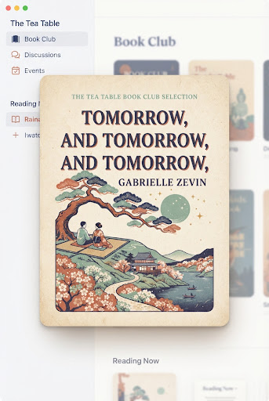
Reading Now
Tomorrow, and Tomorrow, and Tomorrow
Gabrielle Zevin
Pace cadence
62% complete
Salon meeting: Friday 8 PM
Pull up a linen armchair, steep your favorite Earl Grey, and compare annotations. Here, discussions move at an unhurried, thoughtful cadence.

Tomorrow, and Tomorrow, and Tomorrow
Gabrielle Zevin
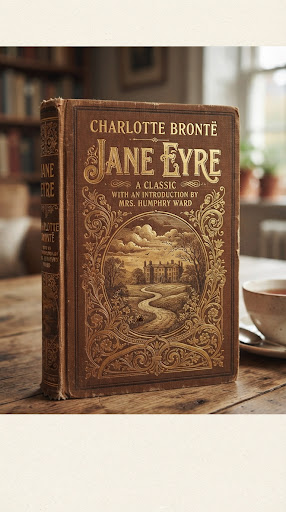
Jane Eyre
Charlotte Brontë
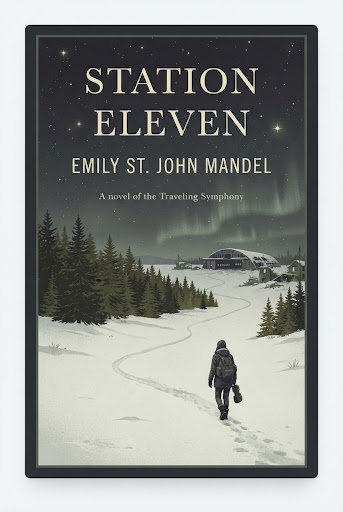
Station Eleven
Emily St. John Mandel
Where Donna Tartt gives us claustrophobic aesthetic isolation in Vermont, Kuang takes the obsession with classical translation and gives it geopolitical teeth. The lingering fog of 1830s Oxford, the relentless scent of old ink, and the delicious melancholy of scholars who love languages too much to survive them.
Keep a pencil handy for the footnotes—they feel like personal annotations left behind by an old tutor who knows more than he should admit.
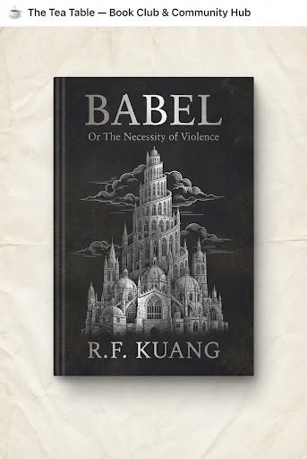
R.F. Kuang • 544 pages
Do not mistake its slender spine for lightweight storytelling. Keegan writes like an Irish goldsmith shaving down precious metals until only what is vital remains. You can finish this in one undisturbed pot of chamomile, but you will carry the quiet tenderness of the well and the rhubarb patch for seasons to come.
“Looking for a book that feels like autumn rain on a tin roof with a cat on your lap.”
Nothing too anxious or hurried. I need amber lamplight, warm soup, slow walks in soggy pine needles, and characters who speak softly. What should I open next?
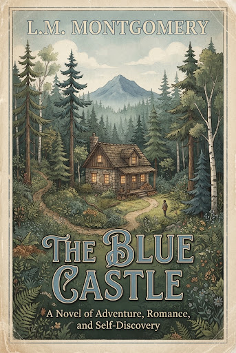
The Blue Castle
L.M. Montgomery
by @audrey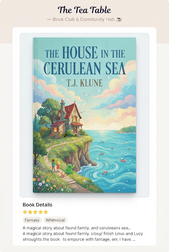
Cerulean Sea
TJ Klune
by @matthew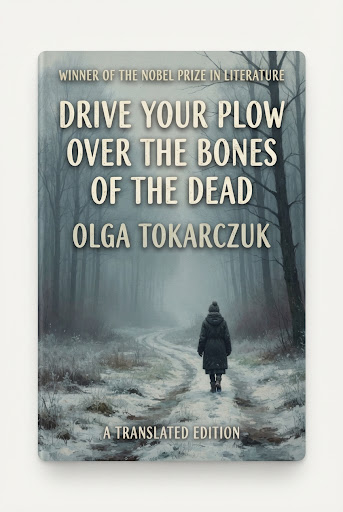
Drive Your Plow...
Olga Tokarczuk
by @soren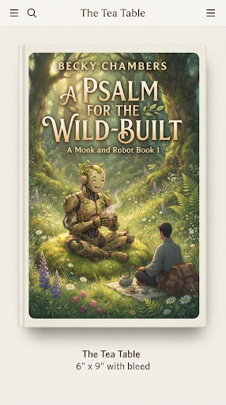
Wild-Built
Becky Chambers
by @tea_drinker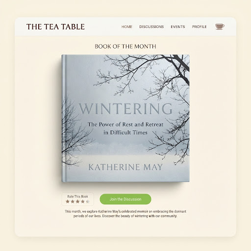
Wintering
Katherine May
by @marina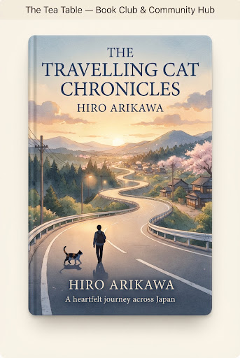
Travelling Cat
Hiro Arikawa
by @nora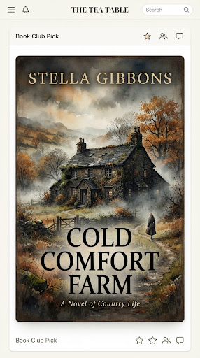
Cold Comfort
Stella Gibbons
by @edward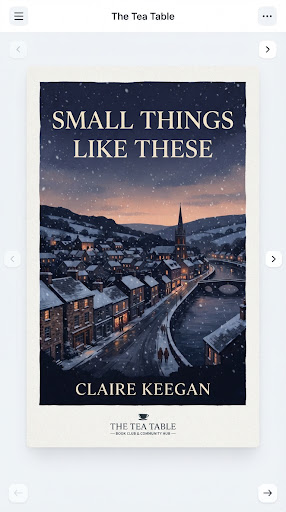
Small Things...
Claire Keegan
by @liam